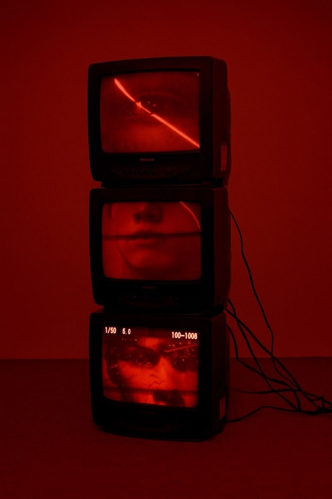
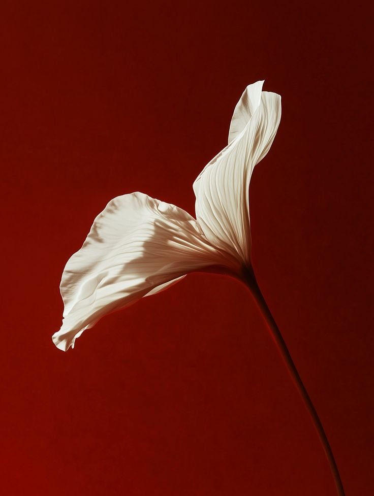

01 / AI 真人＋动画
切入点：等候时的碎片时间
前期构思
将咖啡店等候设为开场，用人物对话建立生活情境，再通过手机特写交代游戏入口。
镜头安排
人物中景 → 手机近景 → 动画玩法。先让观众理解“为什么玩”，再展示“怎么玩”。
从构思，到画面。
以创意策划为起点，通过分镜、实拍与 AI 影像，
把故事转化为可观看的作品。

张家倩
海外广告创意策划 / AI 视频创作
以用户洞察为起点，探索人物关系、
叙事节奏与情绪张力，让创意从脚本走向可传播的影像。
山东工艺美术学院 · 戏剧影视美术设计本科
2023.09—2027.07 / GPA 3.91/5 / 专业前 15%


我关注人物为什么行动，也关心观众为什么愿意停留。习惯从影视与社交内容中拆解关系、冲突和情绪，再用脚本、AI 影像与剪辑，把观察转化为具体的视觉表达。
心动 × TapTap / 女性向拼豆休闲游戏 / 01—02
心动 × TapTap / 女性向拼豆休闲游戏 / 03—04
点点互动 / 海外女性向剧情游戏 / 05—06
点点互动 / 海外女性向剧情游戏 / 07—08
把传统白蛇意象放入未来城市：人物保留伞、服饰等辨识线索，环境以霓虹招牌与高密度建筑形成时代反差。
青绿作为环境主色，品红霓虹作为局部强调。以人物轮廓和城市纵深建立观看重点，统一生成画面的视觉语言。
线上投票 / 最佳人气奖
传统人物 × 未来城市
统一色彩、人物与场景
按叙事节奏组织镜头
课程作业 / 遗迹花园 · 3D 建模环境动态 / 00:30
以“遗迹被植物重新占据”为主题：建筑与树根形成对照，中央花朵作为视线落点。
前景树根引导视线，中景突出主体，后景墙体与窗洞交代空间深度。
向中央主体推进，以遮挡与景别变化呈现空间。
红色箭头标记运动方向；画面、动作、对白与时长并列记录。先确认空间关系与动作衔接，再进入动态制作。
点击任意原稿放大 · 可逐张切换查看